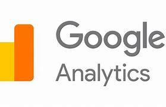
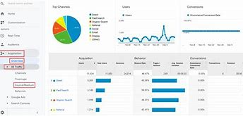

5 Marketing Productivity Apps for Your Team
Certainly! Here's an in-depth blog on five essential marketing productivity apps that can transform how your team operates and maximizes efficiency in achieving marketing goals:
In today’s competitive digital landscape, marketing teams face the constant challenge of staying organized, collaborating effectively, and delivering measurable results. Fortunately, there are numerous productivity apps designed to streamline workflows, enhance creativity, and optimize performance. Whether you’re managing social media campaigns, launching email marketing initiatives, or analyzing customer data, integrating the right tools can significantly elevate your team’s productivity and overall success. Let’s explore five essential marketing productivity apps that every modern marketing team should consider leveraging.
1. Asana: Streamline Project Management
Asana is a robust project management tool that empowers marketing teams to organize tasks, track progress, and collaborate seamlessly. With customizable project boards, task assignments, and deadlines, Asana ensures that everyone is aligned on priorities and deadlines. Here’s how Asana can benefit your marketing team:
- Task Management: Create tasks, set due dates, and assign responsibilities to team members, ensuring clarity and accountability.
- Project Planning: Visualize project timelines and dependencies using Gantt charts and project boards.
- Collaboration: Foster teamwork with real-time updates, comments, and file attachments within tasks.
- Integration: Sync Asana with other tools like Slack, Google Drive, and HubSpot for enhanced productivity and communication.

2. Buffer: Simplify Social Media Management
Buffer is a comprehensive social media management platform that simplifies the process of planning, scheduling, and analyzing social media content across multiple platforms. From Facebook and Twitter to LinkedIn and Instagram, Buffer offers a centralized dashboard for managing all your social media accounts. Here’s why Buffer is essential for marketing teams:.png)
- Content Scheduling: Plan and schedule posts in advance, ensuring consistent and timely content distribution.
- Content Queuing: Use Buffer’s queue feature to automatically publish posts at optimal times for maximum engagement.
- Analytics: Track post performance, monitor engagement metrics, and generate insightful reports to refine social media strategies.
- Collaboration: Invite team members to collaborate on content creation, review drafts, and provide feedback before publishing.
3. HubSpot: Automate Marketing Processes
HubSpot is an all-in-one inbound marketing and sales platform that provides tools for lead generation, email marketing, CRM, and analytics. Designed to streamline marketing processes and drive growth, HubSpot offers several key features for marketing teams:- Lead Management: Capture leads through forms, landing pages, and personalized email campaigns.
- Email Marketing: Create, automate, and analyze email campaigns to nurture leads and convert prospects into customers.
- CRM Integration: Sync customer data across marketing, sales, and service teams to provide a unified view of customer interactions.
- Workflow Automation: Automate repetitive tasks, such as lead scoring and email follow-ups, to save time and improve efficiency.
- Analytics: Measure campaign performance, track ROI, and generate detailed reports to optimize marketing strategies.
4. Canva: Design Visually Compelling Content
Canva is a versatile graphic design tool that enables marketers to create stunning visuals, presentations, and marketing materials without the need for graphic design expertise. From social media graphics and infographics to flyers and presentations, Canva offers a wide range of templates and customizable design elements. Here’s why Canva is a must-have for marketing teams:- Template Library: Access thousands of pre-designed templates for various marketing materials, including social media posts, flyers, and posters.
- Drag-and-Drop Editor: Easily customize designs by dragging and dropping elements, adding text, images, and icons.
- Collaboration: Invite team members to collaborate on designs, share feedback, and make real-time edits.
- Brand Kit: Create and store brand assets, such as logos, colors, and fonts, to maintain brand consistency across all marketing materials.
5. Google Analytics: Analyze Website Performance
Google Analytics is a powerful web analytics tool that provides valuable insights into website traffic, user behavior, and marketing campaign performance. By tracking key metrics and analyzing data, marketing teams can measure the effectiveness of their marketing efforts, identify trends, and make data-driven decisions. Here’s how Google Analytics can benefit your marketing strategy:-

- Traffic Analysis: Monitor website traffic, including user demographics, acquisition channels, and referral sources.
- Conversion Tracking: Track goals and conversions, such as form submissions, newsletter sign-ups, and purchases, to measure campaign success.
- Behavior Analysis: Understand how users interact with your website, including page views, bounce rates, and average session duration.
- Campaign Attribution: Evaluate the performance of marketing campaigns, including PPC ads, email newsletters, and social media promotions.
- Custom Reports: Create custom dashboards and reports to visualize data and gain actionable insights into audience behavior. Google Analytics’ robust reporting capabilities and real-time data analysis empower marketing teams to optimize website performance, improve user experience, and drive conversions. By leveraging actionable insights, marketers can refine their strategies, allocate resources effectively, and achieve their business objectives. 
Conclusion:
Incorporating these five marketing productivity apps into your team’s workflow can streamline operations, enhance collaboration, and maximize efficiency in achieving marketing goals. Whether you’re managing projects with Asana, scheduling social media posts with Buffer, automating marketing campaigns with HubSpot, designing visual content with Canva, or analyzing website performance with Google Analytics, each app offers unique features and benefits to support your team’s success. By leveraging these tools effectively, marketing teams can streamline processes, improve productivity, and deliver impactful campaigns that resonate with their target audience. Embrace digital transformation and empower your team to achieve marketing excellence with the right productivity apps tailored to your business needs. Ready to elevate your marketing efforts? Start exploring these apps today and unlock new opportunities for growth and success.Get started with a consultation today.
Unlock your business's potential with a consultation today! I am Faizan Abbasi, a skilled software engineer and web developer dedicated to transforming your ideas into reality. With expertise in creating dynamic websites, optimizing performance, and implementing innovative solutions, I can help you achieve your digital goals. Let's work together to elevate your online presence and drive success. Contact me now to get started!
Let's Work Together